Notable and upcoming architecture around Shenzhen – renderings shown for buildings still under construction.
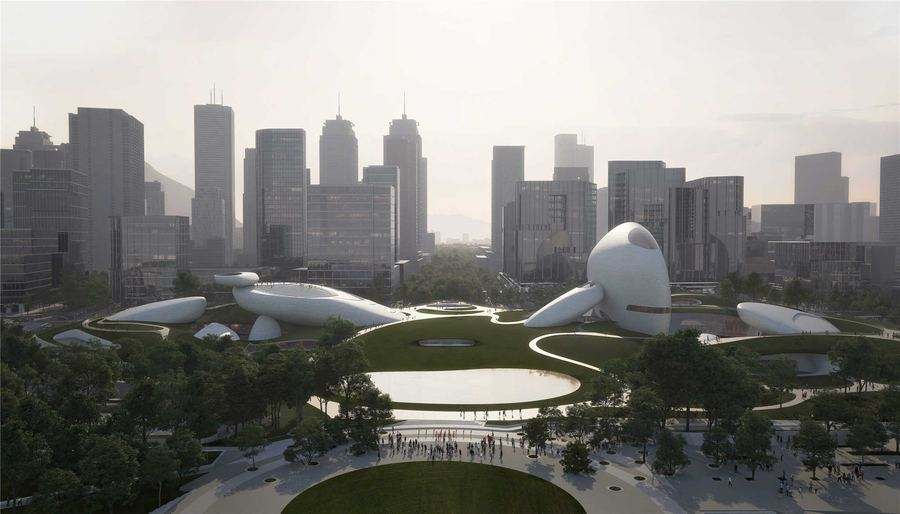
Shenzhen Bay Cultural Plaza
2025, Nanshan
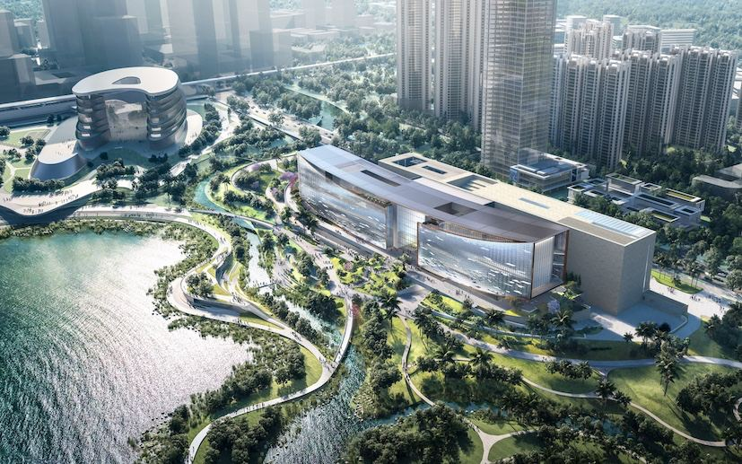
Shenzhen International Art Museum
2026, Guangming
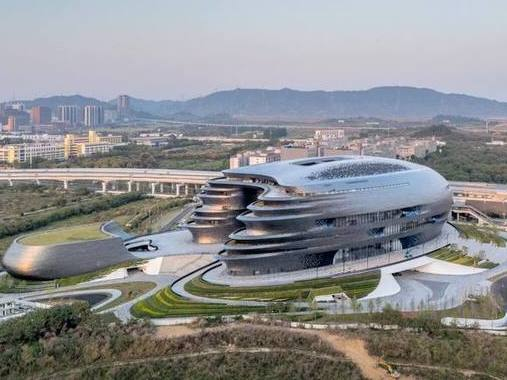
Shenzhen Science & Technology Museum
2025, Guangming
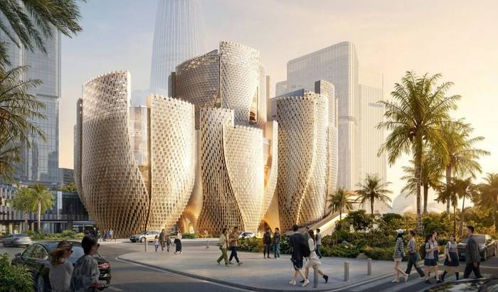
Róng Museum of Art
2027, Nanshan
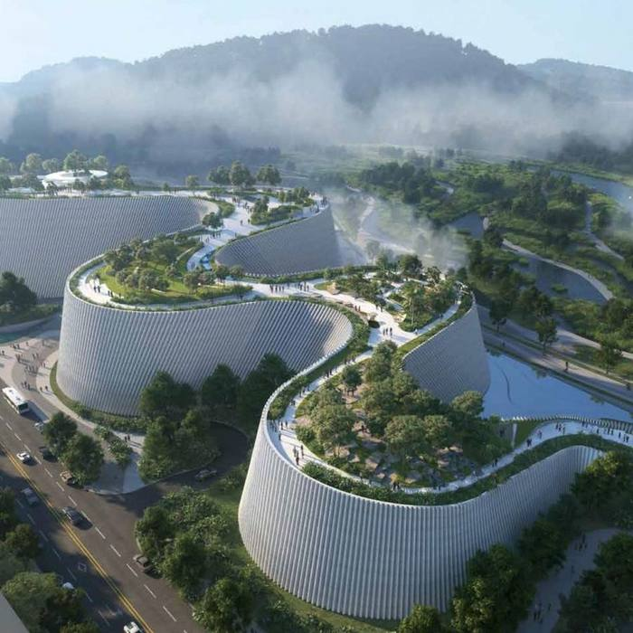
Shenzhen Museum of Natural History
Late 2026, Pingshan
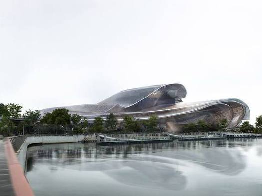
Shenzhen Opera House
2028, Nanshan
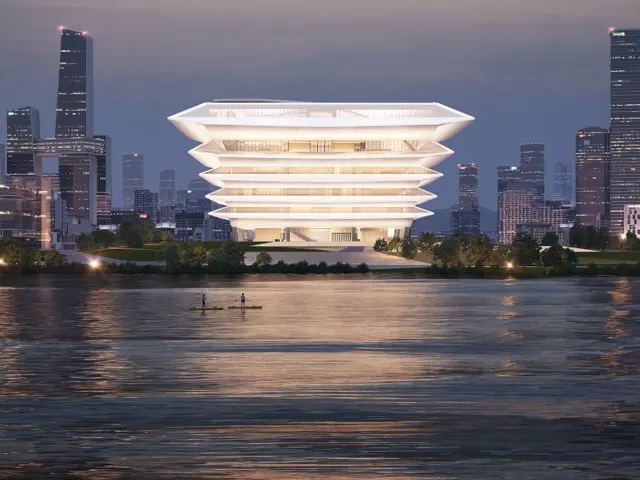
Qianhai Museum
Late 2026, Qianhai
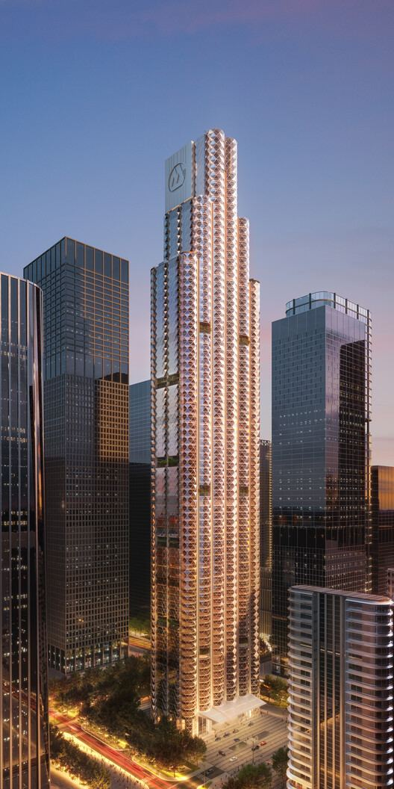
China Merchants Bank Global HQ
2025, Nanshan
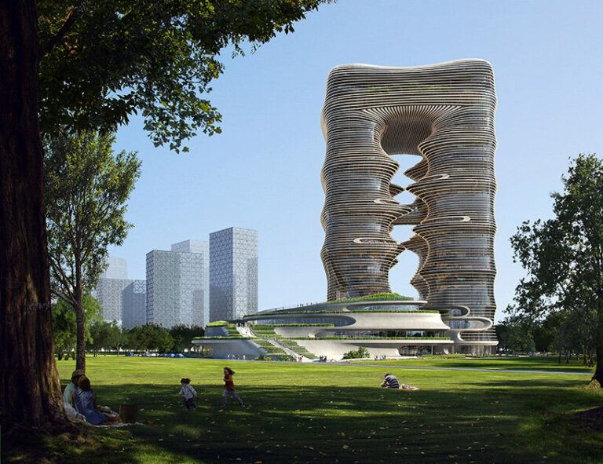
Yidan Center
Late 2026, Qianhai
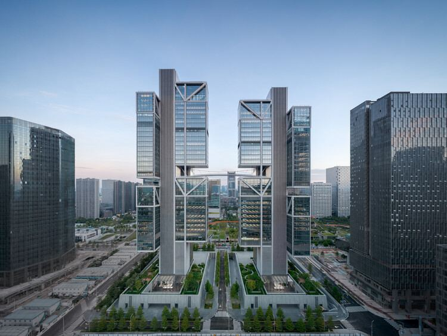
DJI Sky City
Nanshan
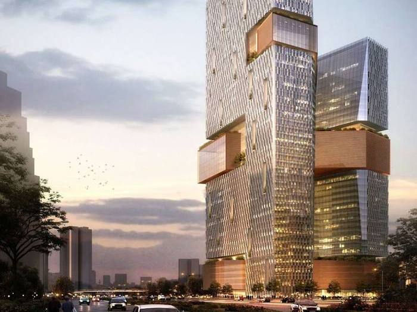
Tencent (e.g., WeChat) Binhai Building
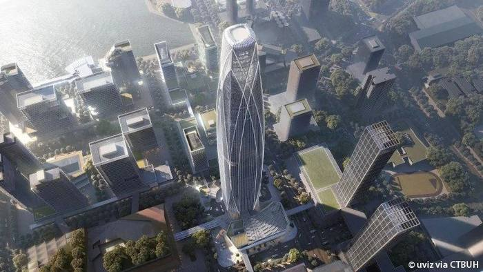
China Merchants Prince Bay Tower
2028, Shekou Nanshan
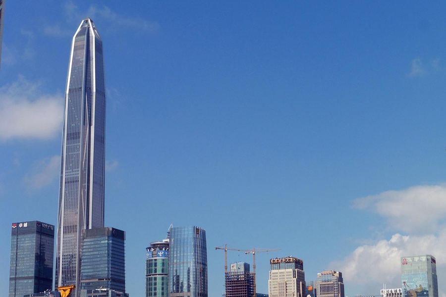
Ping An Tower
World’s Third Tallest, Futian
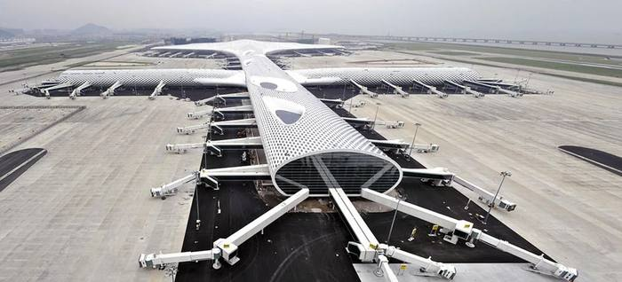
Bao'an International Airport Terminal
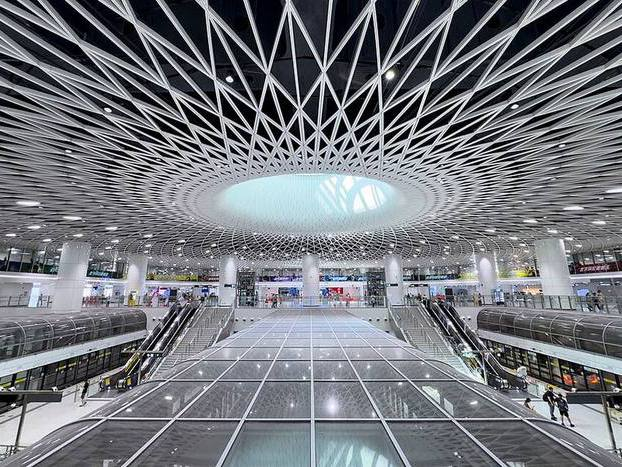
Gangxia North Metro Station
Lines 2, 10, 11, 14; Near Civic Center
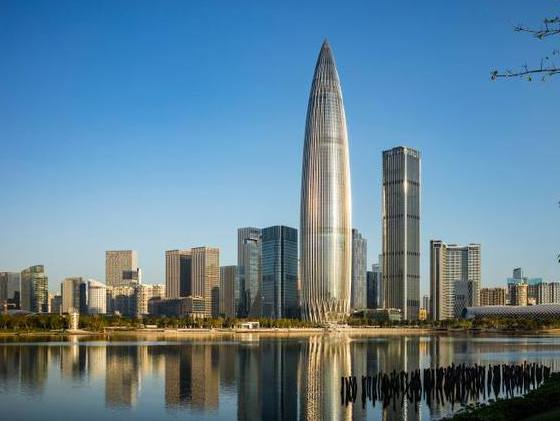
China Resources HQ “Spring Bamboo”
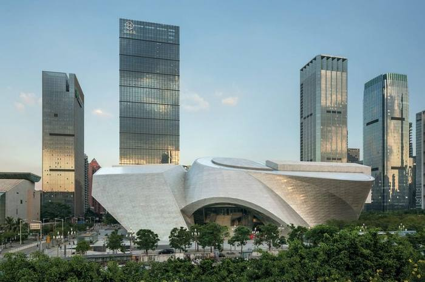
Shenzhen Museum of Urban Planning & Contemporary Art
Futian
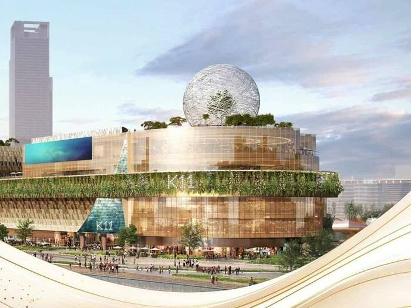
K11 ECOAST
2025, Retail, Nanshan Shekou, Line 12
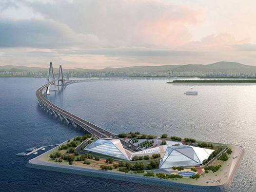
Shenzhen Zhongshan Tunnel-Bridge
Shenzhen to Macao
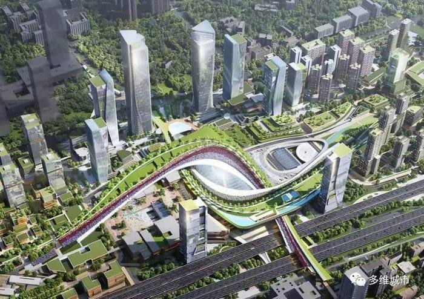
Xili Station
2028, Northern Nanshan
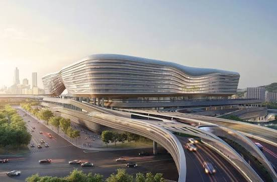
Huanggang Port Complex
July 2026, Futian
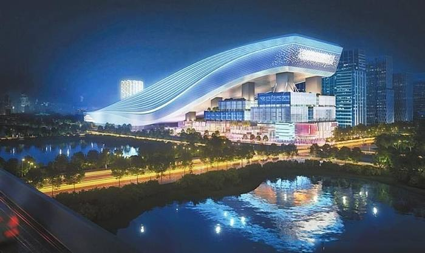
Qianhai Huafa Snow World
2025, Qianhai – world's largest indoor ski resort
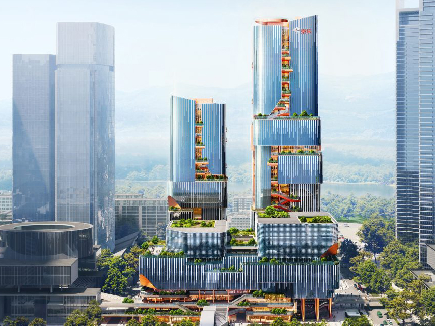
JD Tower & JD Museum
2027, Shenzhen Bay, Nanshan
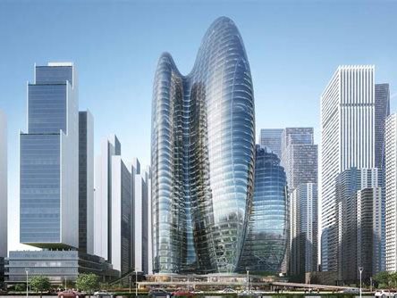
OPPO Headquarters
2026, Shenzhen Bay, Nanshan
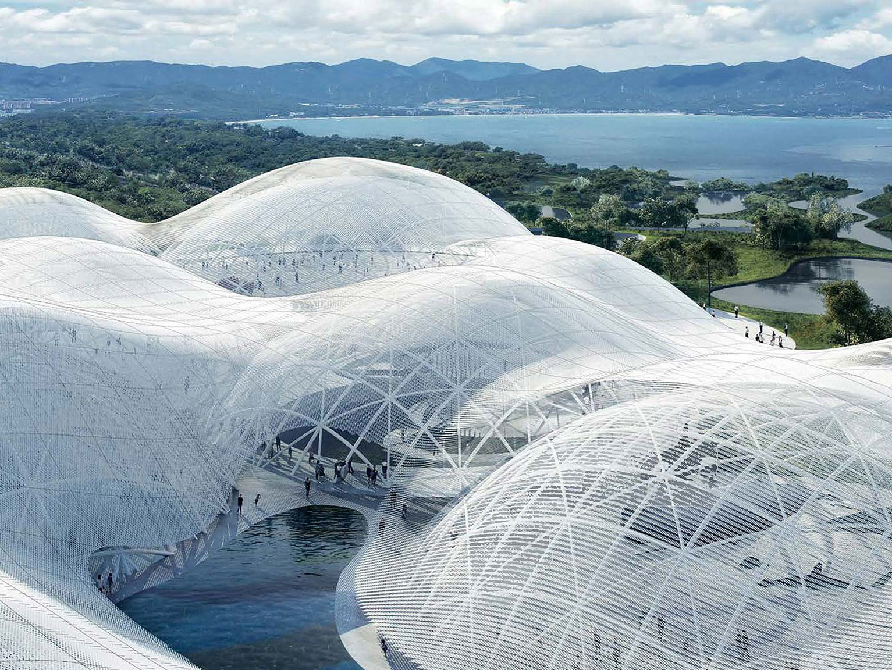
Shenzhen Maritime Museum
In Planning, Dapeng New District
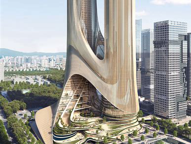
Tencent Helix
2028, Qianhai, Bao'an
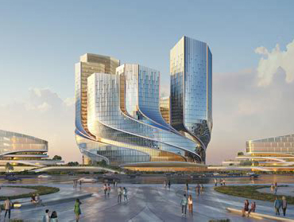
Tower C
2027, Shenzhen Bay, Nanshan